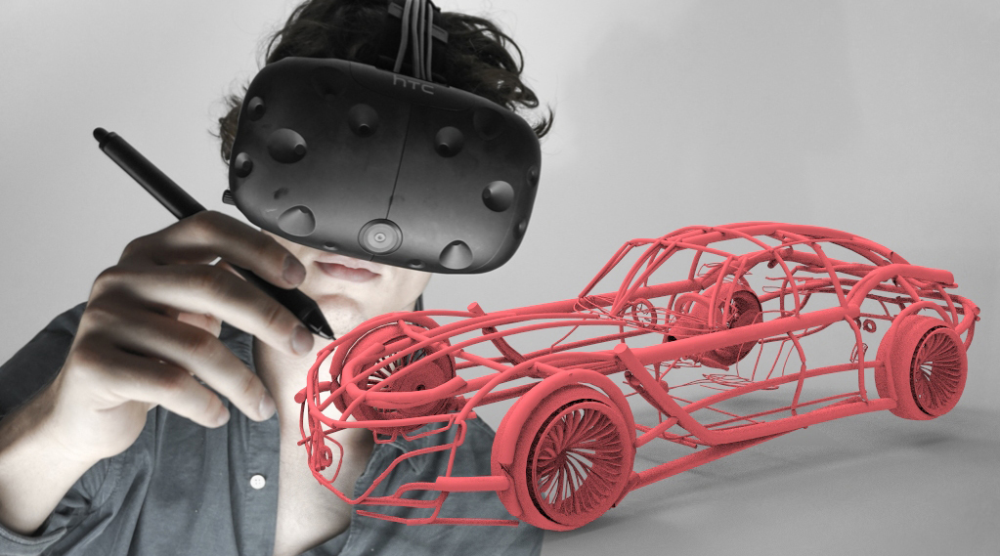
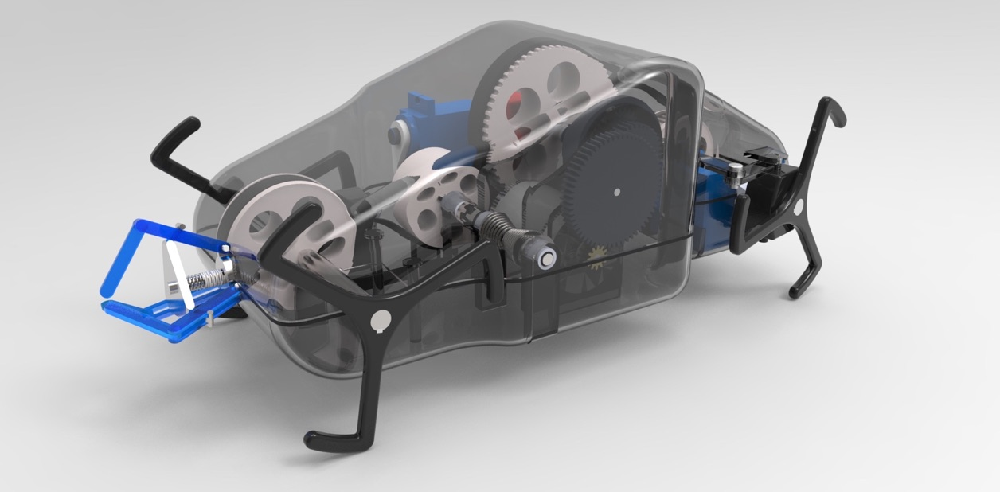
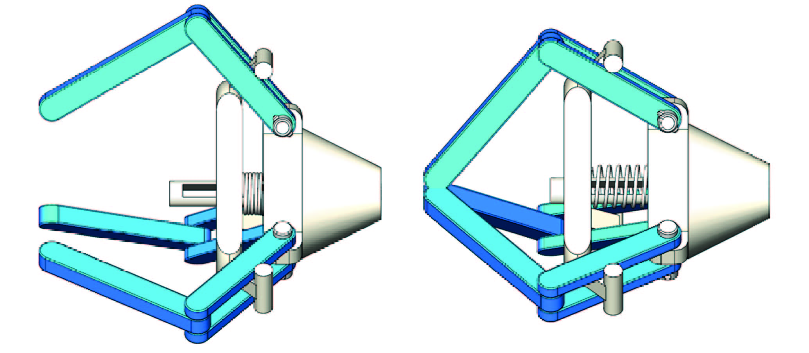

Contact
Telephone
UK: +447490205814
CH: +41789077059
Address
Paolo Falco Rüegg
55 Sheffield Terrace
W8 7NB London
Mimicking natural principles for technology and industrial applications
View moreFuture Interfaces between Robots, Humans and the Environment
View moreNot only does it know better moves, it now also makes them
View moreAn ultra mobile robot
View moreA minimal razor
View moreInternship
View moreInternship
View moreA cross-disciplinary project bridging art and science
View moreAn installation celebrating creativity and idea generation.
View moreAn interactive gizmo
View moreRestoration of a 70s road bike
View moreA neuropsychological study about musical improvisation
View moreUsing shadows to modulate an audio signal
View moreA collection of sideprojects
View moreI work on the interface between people and technology. By developing new ways of interacting with our environment through intelligent systems, I aim to bring the two closer together. As technologies around us become more complex, efficient communication between the user and the product is becoming ever more important. I strive to develop products that are technically challenging, but feel natural to use. If you are looking for a freelancer within the field of industrial design, technology development or robotics, please feel free to contact me.
UK: +447490205814
CH: +41789077059
Paolo Falco Rüegg
55 Sheffield Terrace
W8 7NB London
I met Seyi (sosafresh.com) at the Queen Elisabeth Prize for Engineering awards, which Gravity Sketch was nominated for. One thing led to another and I joined the startup for a month before my upcoming year at university. Gravity Sketch is the first mixed reality 3D creation tool designed from the ground up for touch and gesture input. They are striving to make digital 3D creation easier for designers, artists, and makers alike. I worked mainly on content creation for their upcoming Kickstarter campaign, creating animations, clips and (video) renders. Furthermore, I worked with and on their new VR version, which allows for an extremly immersive 3D creation experience.
Selective Laser Sintering (SLS) prints as rewards for backing the Kickstarter campaign
Below, you can get an impression of what I was doing and working on. Part of the internship also included making this website a bit tidier and better-looking.
Here I was working on a car in Virtual Reality. It was quite tricky to produce these 'mixed reality' shots, i.e. have me and the model in the same shot. To do so, we used not only a camera (to film the person sketching), but also a 'virtual camera' that filmed the model. Afterwards, these two images were composited to produce these results.

A video render of a motorcycle sketch I made. During the internship, I could greatly advance my knowledge about modifying and rendering 3D geometry. I mainly used KeyShot and Cinema4D for animations.
This is my improved design for a Mini Wheg™. Whegs are a combination of a wheel and a leg and are used in robot locomotion. The main advantage is that the robot is able to climb obstacles greater than the radius of the wheel (which usually limits how high it can climb). This robot only measures 20cm in length and 8cm in width and is modelled mostly from stock parts, while the others can be 3D-printed. I performed a full engineering analysis to determine the motor specs required to achieve sufficient speeds and torques. From there I designed a spur gear / planetary gearbox as well as a belt drive system. Furthermore, I proposed a novel grab and drag mechanism towards the rear of the robot, which allows the robot to transport other objects, inspired by the ant. Applications are wide-ranging, such as in cleanups after natural catastrophes. The model was made in Solidworks. Have a look at some more pictures below.
The full robot
The gripper subassembly, in open and closed positions. It is engaged by the hook mechanism shown in the following picture.

Top view of the hook mechanism. Mechanical clutches are used to couple it to the main tranmission system

I ran FEA on the slider in the gripper in order to validate whether it can withstand the proposed forces

Animated render without the top half of the enclosure

Continuum is an interdisciplinary installation that celebrates creativity and idea generation. Every visitor receives a ping pong ball and customises it with paint. The ball is then inserted into the Rube Goldberg style machine, where it undergoes an exciting journey. The user needs to accompany his or her ball through the machine, interact with it, and see how it changes. The whole machine stands as a metaphor for creativity, with the balls representing the different ideas. Some shine bright and make it, and others are lost in the chaos.
This was in some ways the sequel to Sensorium and I was more involved on the conceptual side and then the final execution. We had incredible feedback and a few weeks later we were asked to present the machine and the Victoria and Albert museum! Have a look at the making of and V&A video below.